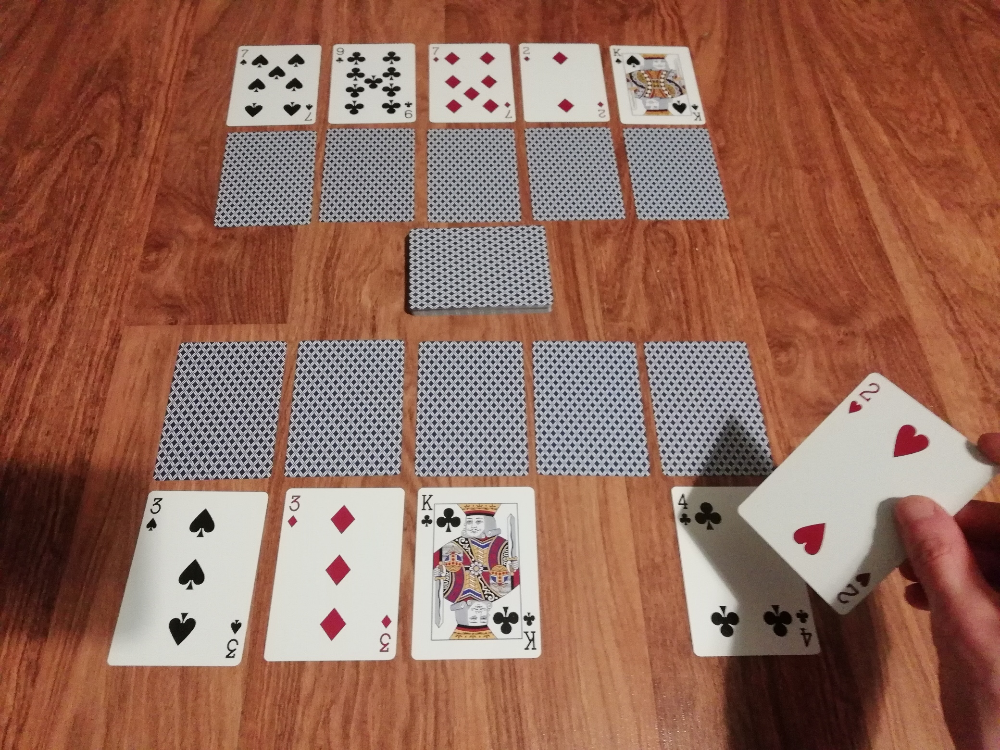

DOWNLOAD LINKS



| Status | Finished |
| Year | 2024 |
| Genre | Card game |
| Engine | N/A |
Pareboal is a card game that can be played with a standard 52-card playing card deck.
A mix of poker and Yu-Gi-Oh (the latter in a very loose sense), players draw and discard cards
in an attempt to get the better hand - though not necessarily the better poker hand - and drop
the opponent's health down to 0.
At its core, Pareboal offers a simple enough gameplay system that it fits into less than 10 pages
of text, but extra depth (and chaos!) is provided by a selection of optional extra rules known as
modifiers.
Pareboal can be played in single-player and two-player "modes".